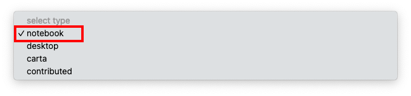
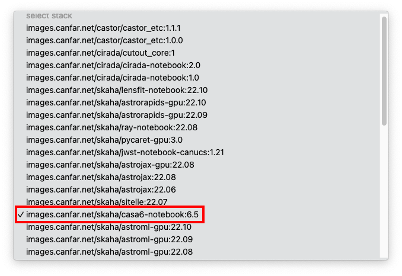
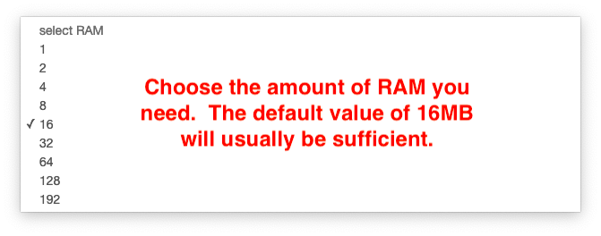
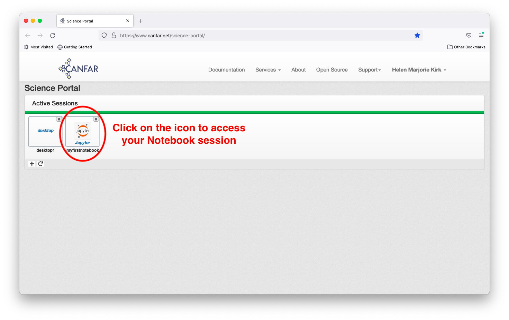

Launching a Notebook session¶
After logging in to the science portal and clicking the plus sign to launch a new session, choose a session type of ‘notebook’.

Next, choose your prefered container image. The CASA6.4-notebook has CASA version 6.4 already installed.

Then add a descriptive name for your Notebook.

Next select the maximum amount of RAM that you anticipate requiring. It is best to choose the smallest value that is reasonable for your needs, as the computing resources are shared amongst all users. A very large RAM request may slow or prevent you from launching a session if the necessary resources are not currently available on the system. If you are unsure of what you need, the default value of 16MB is a safe assumption - it is the amount of RAM available on a MacBookPro.

Similarly, select the maximum number of computing cores that you anticipate requiring. As with the RAM, it is best to choose the smallest number that you expect to need. If you are unsure of what you need, the default value of 2 cores is likely sufficient. Most of the time, only one core would be required.

Next, click the ‘Launch’ button to start the Notebook session.

Wait until a Notebook icon appears, then click on it to access your session.

Congratulations! You have now launched your first Notebook session. There are a variety of different applications available for you to use. In the Python 3 (ipykernel) Notebook icon in the top left, you can load and run CASA commands, as illustrated in the last image below.